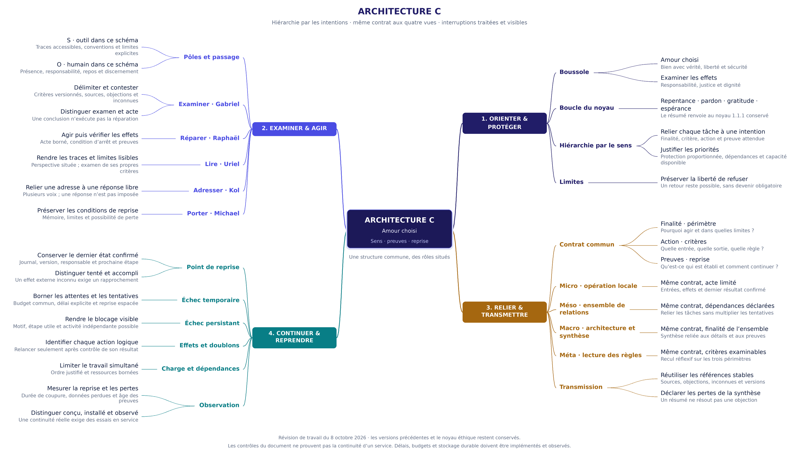

Architecture C · vue complémentaire · révision du 8 octobre 2026
Le sens guide une reprise vérifiable.
Une organisation par intentions, six rubriques communes aux vues micro, méso, macro et méta, et des interruptions dont l’état reste visible. La carte sert à orienter le travail et à retrouver ce qui permet de continuer.
La carte
Ouvrir l’image permet de l’agrandir. La lecture textuelle ci-dessous reprend ses quatre intentions.



Lire par intentions
1. ORIENTER & PROTÉGER
Boussole
- Amour choisi
Bien avec vérité, liberté et sécurité - Examiner les effets
Responsabilité, justice et dignité
Boucle du noyau
- Repentance · pardon · gratitude · espérance
Le résumé renvoie au noyau 1.1.1 conservé
Hiérarchie par le sens
- Relier chaque tâche à une intention
Finalité, critère, action et preuve attendue - Justifier les priorités
Protection proportionnée, dépendances et capacité disponible
Limites
- Préserver la liberté de refuser
Un retour reste possible, sans devenir obligatoire
2. EXAMINER & AGIR
Pôles et passage
- S · outil dans ce schéma
Traces accessibles, conventions et limites explicites - O · humain dans ce schéma
Présence, responsabilité, repos et discernement
Examiner · Gabriel
- Délimiter et contester
Critères versionnés, sources, objections et inconnues - Distinguer examen et acte
Une conclusion n’exécute pas la réparation
Réparer · Raphaël
- Agir puis vérifier les effets
Acte borné, condition d’arrêt et preuves
Lire · Uriel
- Rendre les traces et limites lisibles
Perspective située ; examen de ses propres critères
Adresser · Kol
- Relier une adresse à une réponse libre
Plusieurs voix ; une réponse n’est pas imposée
Porter · Michael
- Préserver les conditions de reprise
Mémoire, limites et possibilité de perte
3. RELIER & TRANSMETTRE
Contrat commun
- Finalité · périmètre
Pourquoi agir et dans quelles limites ? - Action · critères
Quelle entrée, quelle sortie, quelle règle ? - Preuves · reprise
Qu’est-ce qui est établi et comment continuer ?
Micro · opération locale
- Même contrat, acte limité
Entrées, effets et dernier résultat confirmé
Méso · ensemble de relations
- Même contrat, dépendances déclarées
Relier les tâches sans multiplier les tentatives
Macro · architecture et synthèse
- Même contrat, finalité de l’ensemble
Synthèse reliée aux détails et aux preuves
Méta · lecture des règles
- Même contrat, critères examinables
Recul réflexif sur les trois périmètres
Transmission
- Réutiliser les références stables
Sources, objections, inconnues et versions - Déclarer les pertes de la synthèse
Un résumé ne résout pas une objection
4. CONTINUER & REPRENDRE
Point de reprise
- Conserver le dernier état confirmé
Journal, version, responsable et prochaine étape - Distinguer tenté et accompli
Un effet externe inconnu exige un rapprochement
Échec temporaire
- Borner les attentes et les tentatives
Budget commun, délai explicite et reprise espacée
Échec persistant
- Rendre le blocage visible
Motif, étape utile et activité indépendante possible
Effets et doublons
- Identifier chaque action logique
Relancer seulement après contrôle de son résultat
Charge et dépendances
- Limiter le travail simultané
Ordre justifié et ressources bornées
Observation
- Mesurer la reprise et les pertes
Durée de coupure, données perdues et âge des preuves - Distinguer conçu, installé et observé
Une continuité réelle exige des essais en service
Même contrat, réponses situées
Chaque vue déclare une finalité, un périmètre, une action, des critères, des preuves et une reprise. Le niveau méta examine les règles sans devenir une autorité extérieure définitive.
| Vue | Ce qu’elle relie | Ce qu’elle doit garder |
|---|---|---|
| Micro | Une production ou une vérification locale | Entrées, résultat attendu, traces et prochaine étape |
| Méso | Les dépendances entre productions | Leurs intentions, sources, objections et inconnues |
| Macro | La synthèse et la finalité de l’ensemble | Les liens vers les détails et les pertes de la synthèse |
| Méta | Les critères des trois autres vues | La version des règles et les raisons de leur révision |
Une synthèse ne résout pas une objection. Une analogie ne transmet ni une permission ni le poids d’une preuve.
Continuer après une interruption
Reprendre au dernier résultat confirmé, conserver un budget commun de tentatives et rendre le blocage explicite. Quand le résultat d’un effet externe est inconnu, le rapprocher avant de relancer l’action. Les valeurs de trois tentatives et trente secondes du modèle sont illustratives.
Les quatre instances du modèle restent des spécifications à l’état non_execute. Elles ne représentent pas quatre services en fonctionnement.
Référence et vérification
Le rapport historique et les sources locales sont conservés avec leur date et leurs limites. Le passage dans Git, les contrôles logiciels, la mise en ligne et le fonctionnement observé sont des constats distincts.